2026-10-03 · 가로 화면(M5 탑, 한 층 3칸)에서 주민은 층을 따라 옆으로 걸어 엘리베이터까지 간다.
정면 walk 를 옆으로 미는 대신 옆모습 걷기를 행으로 더했다(21행 walk_side · 22행 carry_side).
그리고 사용자 지시 “일하면서 카메라를 정면으로 보는 건 부자연스럽다”에 따라 방별 작업 10행(7~16)을
일하는 쪽을 보게 제자리에서 다시 그렸고, 정면이 필요 없는 장면용 3/4 행 셋을 더했다(23~25행).
0~6행과 17~20행은 한 픽셀도 바뀌지 않았다(행 단위 해시 대조, 288시트).
| 행 | 클립 | 무엇을 하나 | 보는 쪽 | 프레임 · 초 |
|---|
관련 그림: 옆모습 순서 · 70px · 실루엣 · 옆얼굴 머리 6 · 얼굴 3 · 3/4 새 행 · 일하는 쪽을 보는 방별 작업 70px
2026-10-03 · 사용자 지시 “방에서 일을 하고 있는 애니메이션도 필요하지 않을까”
· “각 방에 엘리베이터를 타고 내려가는 걸로”.
역할 여덟이 똑같이 하던 work 한 줄 대신, 방마다 다른 일을 시트에 행으로 더했다(7행 → 21행).
기존 7행은 한 픽셀도 바뀌지 않았다(출하물 해시 대조).
S12 갱신 — 사용자 지시 “일하면서 카메라를 정면으로 보는 건 부자연스럽다”. 7~16행을 같은 행 번호로 다시 그려 몸과 얼굴이 설비(왼쪽) 쪽을 본다: 옆모습 = 모루·냄비·레버·독서대·공기통, 3/4 = 담요·상자·붕대·밸브·화분. 라운지(17)는 뒷모습, 엘리베이터(18~20)는 그대로다. 옆모습에서는 먼 팔이 몸 뒤라 역할 도구를 허리 뒤에 건다.
| 행 | 방 id | 무엇을 하나 | 프레임 · 초 |
|---|
사람은 거의 움직이지 않는다. 내려가는 느낌은 칸 전체를 움직여 낸다(개발). 아래 왼쪽 넷은 기다림 2 → 돌아섬 1 → 탐 2 를 순서대로 돈다.
오른쪽은 칸에 elevator_ride 를 넣고 칸만 움직인 예시다.
관련 그림: 방 플레이트 합성 · 70px 판독(방 11 × 8역할) · 엘리베이터 자세
2026-10-01 · 사용자 지시 “여성 캐릭터도 좀 있어야 할 것 같다”에 대한 답이다
(docs/RESIDENT_STATS.md §6이 사양서).
체형 2종 × 머리 6종 × 얼굴 3종을 넣어 8역할 × 체형 2 = 16종 시트를 낸다.
규약(셀·발 기준선·ppm·자세 7종·3열 7행)은 한 자리도 바꾸지 않았다.
| 무엇 | 경로 | 비고 |
|---|---|---|
| 체형 A 시트(S8 그대로) | front/p2/<role>.png · src/ · masks/ |
개발이 이미 붙이고 있는 경로. 건드리지 않았다 |
| 체형 B 시트(신규) | front/p2/<role>_b.png · src/<role>_b.png · masks/<role>_b.png |
접미사 _b 하나만 붙으면 된다 |
| 머리 6종 | front/p2/hair/<role>_<body>/<id>.png |
x1 투명 패치. 기본 시트 위에 알파 합성 |
| 얼굴 3종 | front/p2/faces/<role>_<body>/<id>.png |
같음. 기본은 short + f0가 구워져 있다 |
| 각인 12종 | imprints/(A) · imprints/b/ · imprints/kid/ · imprints/kid_b/ |
체형마다 앵커가 달라 네 벌 |
레이어는 “차이만 담은 패치”다. 기본 시트 + 패치 = 그 조합의 시트가 한 픽셀도 틀리지 않게 되도록 생성기가 144장 전수 검사한다(현재 불일치 0건). x4가 필요하면 NEAREST로 정수 확대하면 된다.
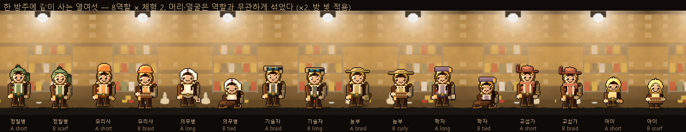
8역할 × 체형 2. 머리·얼굴은 역할과 무관하게 섞었고, 자세도 섞었다(서기·걷기·일하기·들기·앉기). 실제 렌더 방 위 ×2, 방 등불색 틴트와 접지 그림자 적용.
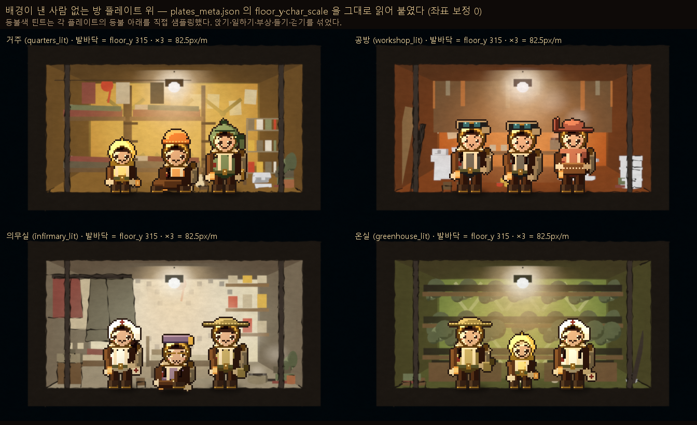
S8에서 「사람 없는 플레이트가 없다」고 적었던 미완이 배경 S8-C에서 풀렸다.
static/art/plates/plates_meta.json의 floor_y(315)와
char_scale(×3)을 그대로 읽어 발바닥을 맞췄다 — 좌표 보정 0.
등불색 틴트는 각 플레이트의 등불 아래를 직접 샘플링한다.
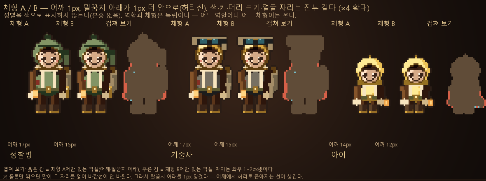
몸통만 깎으면 팔이 그 자리를 덮어 바깥선이 안 바뀐다(폭을 재 보고 알았다). 그래서 체형 B는 어깨를 1px 좁히고 팔꿈치 아래를 1px 안으로 붙인다 — 어깨에서 허리로 좁아지는 선이 그때 생긴다. 겹쳐 보기의 붉은 칸이 체형 A에만 있는 픽셀이다.
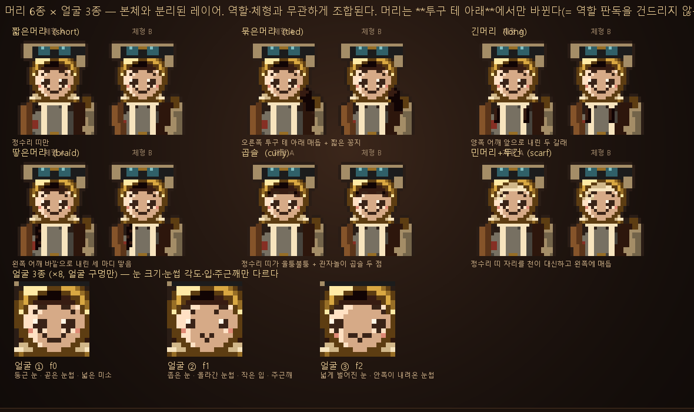
짧은머리 · 묶은머리 · 긴머리 · 땋은머리 · 곱슬 · 민머리+두건. 여섯 전부 같은 정수리 띠로 시작하므로 기본(short)으로 구워 낸 시트 위에 어느 머리를 얹어도 기본 머리가 완전히 덮인다(생성기가 증명한다). 얼굴은 눈 크기·간격, 눈썹 각도, 입, 주근깨만 다르다.
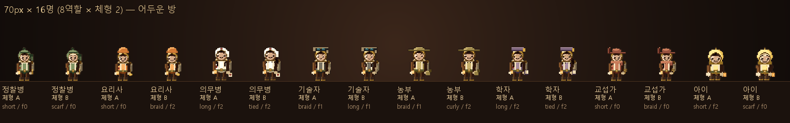
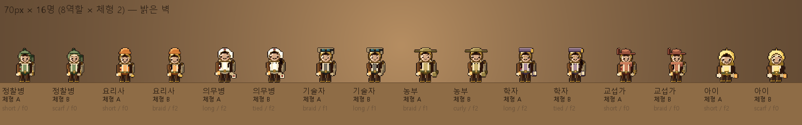
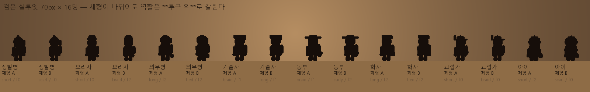
실루엣에서 갈라 주는 것은 여전히 머리에 쓴 것이다 — 체형은 바깥선을 1~2px만 움직인다. 사람의 차이(체형·머리·얼굴)는 실제 게임 크기(×3 = 132px)에서 읽히고, 70px은 역할이 버티는지 보는 시험이다. 교섭가의 챙 한쪽을 접어 올려 S8에서 가장 비슷하던 의무병과 갈라 놓았다(뻗는 방향이 좌/우로 반대).
카드 안은 실제 렌더 방 위 ×3 실제 크기. 「걷기 ▶」로 그 자리에서 걷는다.
각인 12종은 체형마다 앵커가 달라 네 벌을 냈다. 생성기가 매 실행마다 ①각인×각인 ②각인×얼굴 3종 ③각인×머리 6종 ④기본머리 덮임 ⑤기본시트+패치==변형시트 를 전수 검사한다 — 현재 전부 0건. 「물의 기억」만 머리 위에 얹히도록 설계된 각인이라 예외이고, 대신 “머리 6종 모두에 실제로 얹히는가”를 거꾸로 검사한다.
2026-10-01 · 사용자가 P2(48px 생활형)를 골랐다. 나머지 다섯 방향과
이전 계열(a·b·c·c1~c6)은 폐기. 8역할 · 자세 7종 · 각인 12종 · 문어 · 뒷모습을
static/art/chars/front/p2/ 에 넣었다. 전부 손으로 찍은 도트(생성 AI 없음).
| 쓰임 | 배율 | 셀 | 발 기준선 | 미터당 | 1.6m |
|---|---|---|---|---|---|
| front 시트(출하 기본) | ×4 | 256 | 240 | 110px | 176px |
| 단면 렌더 방 안 | ×3 | 192 | 180 | 82.5px | 132px |
| 원화(소스) | ×1 | 64 | 60 | 27.5px | 44px |
두 배율이 모두 정수다. S7에서 지적한 방향 간 키 ±12% 오차가 여기서 사라졌다
— 여덟 역할 전부 맨머리 44px(아이 33px)로 정확히 일치한다.
소수 배율로 늘리면 2.5D가 무너진다. image-rendering: pixelated 필수.
카드 안은 실제 렌더 방 위 ×3 실제 크기. 「걷기 ▶」를 누르면 그 자리에서 걷는다.
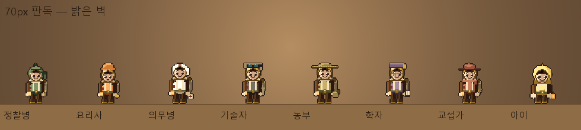
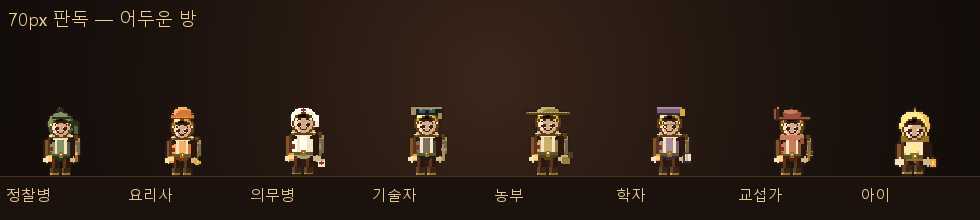
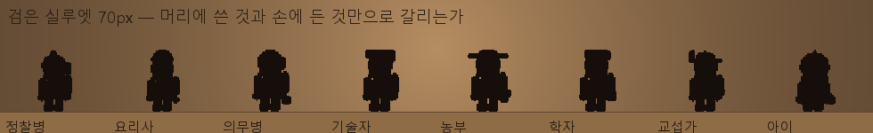
밝은 벽 / 어두운 방 / 검은 실루엣. 갈라 주는 것은 ①머리에 쓴 것(뾰족 후드·키 큰 모자· 머릿수건·넓은 고글·넓은 챙·납작 모자·둥근 챙·작은 후드) ②겉옷 색 ③손에 든 것 셋이다.
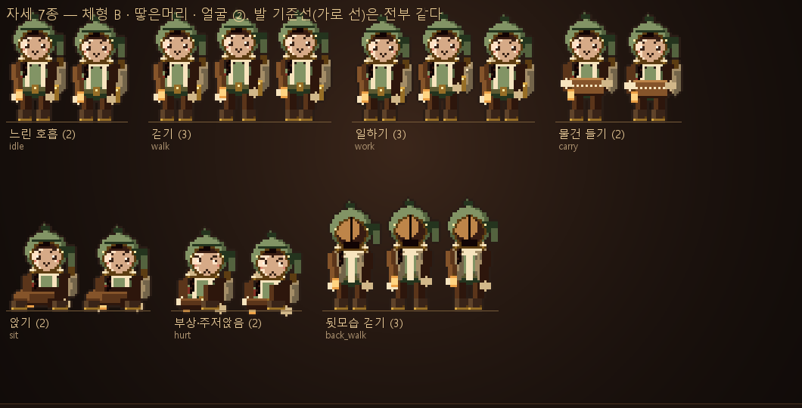
sit 은 정식 자세다 — 더 이상 Idle 을 방석 뒤로 내려 속이지 않는다. 앉기·주저앉음은 다리를 몸통 앞으로 그린다. 발 기준선은 전부 같다.
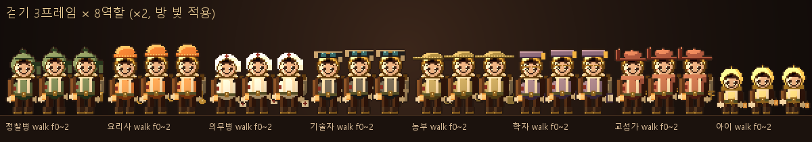
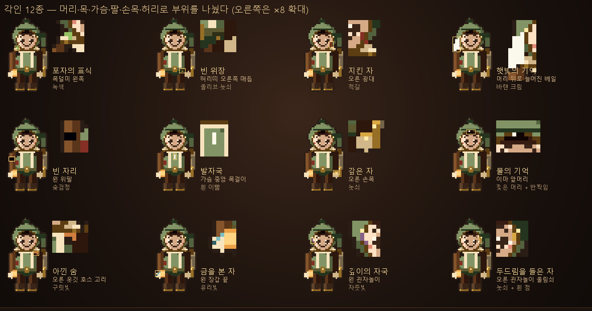
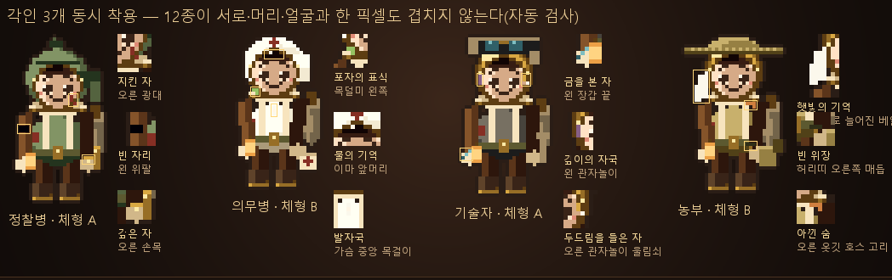
48px에서 각인은 2~5px이라 색으로 구분한다. 12종의 자리를 머리(앞머리·좌우 관자놀이·
광대·왼쪽 베일) · 목(좌 목덜미 / 우 옷깃) · 가슴 · 왼 위팔 · 오른 손목 · 왼 장갑 끝 · 허리띠로 나눴다.
생성기가 12종 레이어의 픽셀 충돌을 자동 검사한다 — 현재 0건.
본체와 같은 셀·같은 자리에 알파 합성만 하면 된다(imprints/<id>.png).
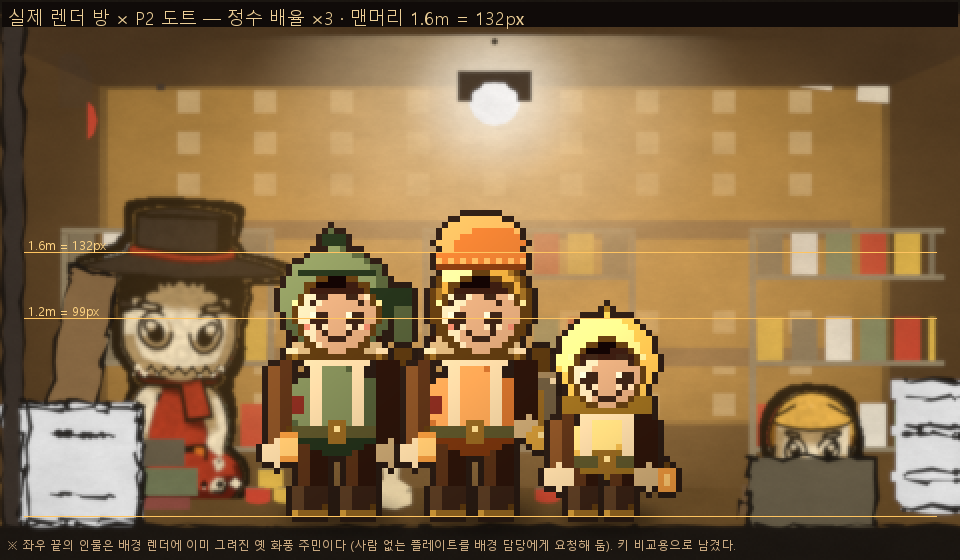
정수 배율 ×3 · 방 등불색 틴트 · 발밑 접지 그림자 · 배경에서 뽑은 팔레트(20% 당기고 대비 1.26배 재확장) · 벽 가까이. 노란 눈금이 1.6m(132px)와 1.2m(99px)다. 좌우 끝의 인물은 배경 렌더에 이미 그려진 옛 화풍 주민이다(사람 없는 플레이트를 배경 담당에게 요청해 둠). 키 비교용으로 일부러 남겼다.
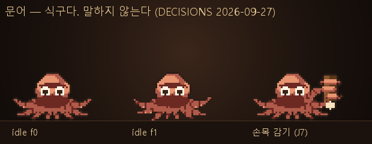
idle 3프레임 + 손목 감기(J7). 눈이 사람보다 밝다(신뢰의 역전을 색으로). 어떤 매체에서도 발화하지 않는다(DECISIONS 2026-09-27).
2026-10-01 · 선정 근거 기록용. P2 외 다섯은 폐기됐다. 전부 손으로 찍은 도트(생성 AI 없음) ·
배경은 실제 렌더 art/deep/section_room_zoom.png
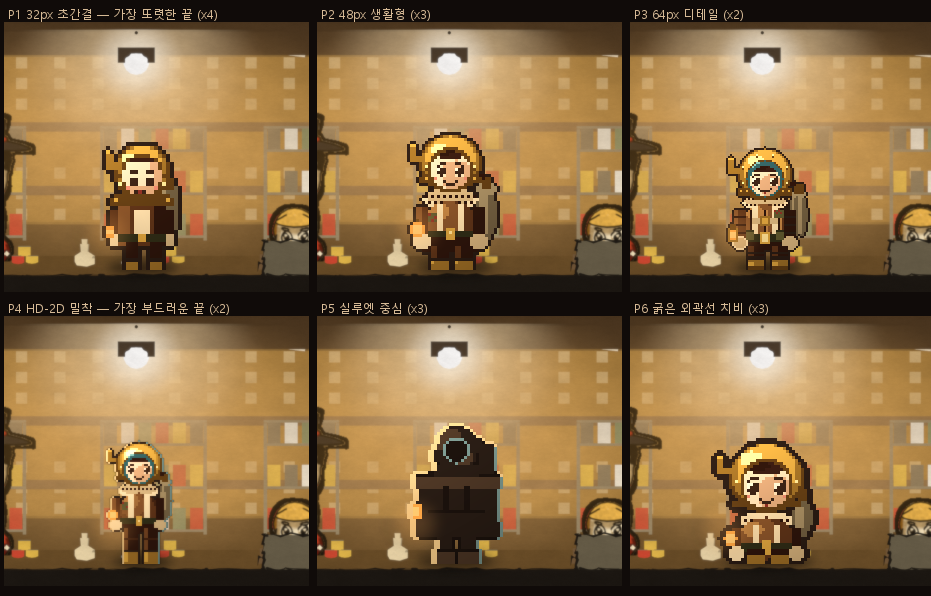
실제 렌더 방 위 1배. 이것이 판정 컷이다.
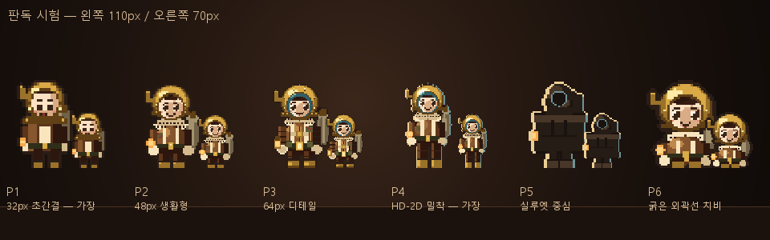
이 한 장만 비정수 배율(정확히 70·110px)이다. 작게 줄였을 때 무엇으로 보이는지 보기 위한 시험이고, 실제 출하는 위의 정수 배율을 쓴다.